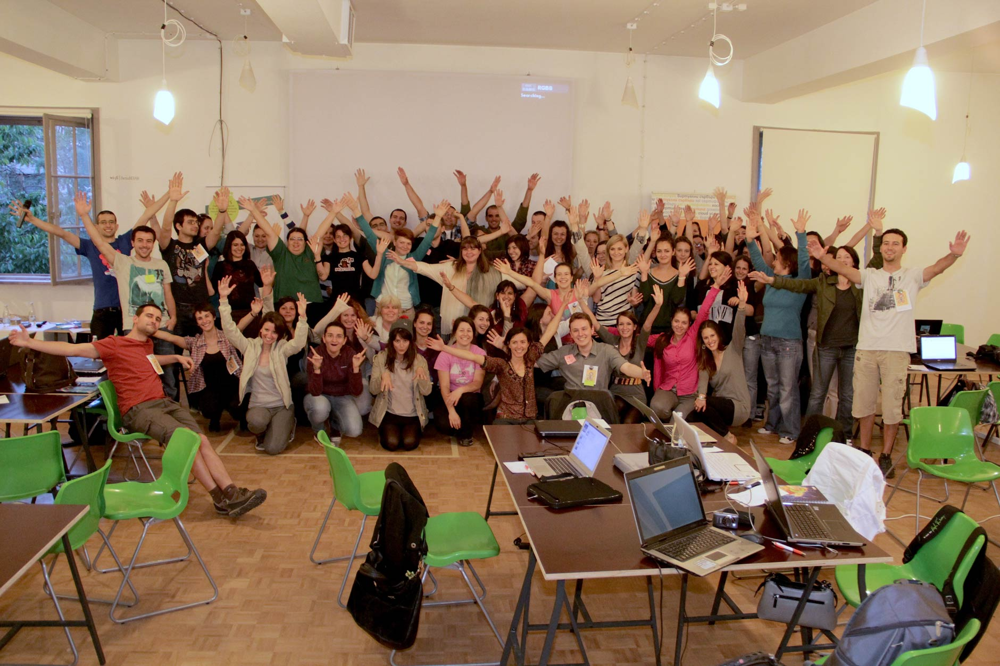
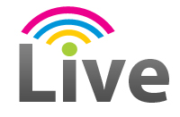

Rails Girls в София!
Rails Girls е безплатен двудневен уъркшоп за разработка на уеб приложения с Ruby on Rails. Насочен е към абсолютно начинаещи дами, без никакъв опит в програмирането.
Регистрацията приключи.
Благодарим на всички участници!
Следете ни в Twitter или Facebook за новини около събитието. Присъединете се в групата Rails Girls Sofia.
Ще ви покажем основи на дизайна, прототипизирането и програмирането за уеб с помощта на нашите инструктори.
Имате нужда единствено от лаптоп, любопитство към нови неща и щипка въображение!
Искате да помогнете? Екипът ни от доброволци е отворен към предложения. Пишете ни.

| 18:45 - 19:00 |
РегистрацияНямате нужда от специални идентификационни знаци, освен името си. Моля не закъснявайте :) |
|---|---|
| 19:00 - 20:00 |
Инсталационно партиПредварително запознаване с участниците. Носете си лаптопите, за да инсталираме необходимия за уъркшопа безплатен софтуер. |
| 20:00 - 21:00 |
Тренирай си роботВашият първи досег с програмирането, и то какъв! Ще управлявате ваш собствен киборг. |
| 21:00 - 21:05 |
Friday Hug!Вземете участие във вашия първи #FridayHug! |
| 9:00 - 10:00 |
Регистрация, кафе и инсталацияВ тази сутрешна сесия ще довършим започнатото в петък вечер, изчиствайки евентуални проблеми. |
|---|---|
| 10:00 - 10:15 |
Добре дошли!Програма за деня и няколко думи от спонсорите |
| 10:20 - 10:45 |
УъркшопПроектиране на вашето уеб приложение |
| 10:50 - 11:10 |
Tryruby.orgДа пробваме програмиране! |
| 11:10 - 13:00 |
УъркшопЗапочнете вашия първи уеб сайт с лъвски скок! |
| 13:00 - 13:30 | Обяд |
| 13:30- 13:45 |
Bentobox упражнениеПреговор на наученото до момента и кое как пасва в цялостната картинка. |
| 13:45 - 14:30 |
Lightning talks от инструкторите
|
| 14:30 - 17:30 |
УъркшопРазвийте вашето уеб приложение |
| 20:00 - |
AfterpartyОтворено за всички. Елате и кажете "Здрасти!" на купчина готини хора, вълнуващи се от всичко технологично.Място: Disco Stereo Bar (сайт ↗) Адрес: ул. Позитано 8 |
betahaus | Sofia (сайт ↗)
ул. Крум Попов 56-58, София (до 4-то РПУ)
Виж карта ↗
Disco Stereo Bar (сайт ↗)
ул. Позитано 8, София
Начало: 20 ч., събота, 1 юни
Rails Girls Sofia е събитие с некомерсиална, идеална цел и се организира на доброволен принцип, с невероятната подкрепа на г-жа Гергана Паси, която е Digital Champion за България.

Искате да помогнете? Търсим спонсори и партньори за това некомерсиално събитие. Пишете ни!


Суперхостинг — Ние сме ново поколение хостинг компания!

Българска фирма, ползваща успешно Ruby on Rails технологията, за да твори решения за уеб.
Колко струва участието? Безплатно е! Достатъчни са единствено вашето вдъхновение, мотивация и ентусиазъм!
За кого е това събитие? За жени и момичета на произволна възраст, имащи единствено основни познания за работа с компютър, но с интерес в технологиите и желание да учат нови неща. В други издания на това събитие по света са участвали дами на всякаква възраст. Събитието ще е на български, но спецификата на проблемната област изисква да може да се оправяте прилично с четене и разбиране на английски текстове. Носете си лаптоп.
Допускат ли се мъже? Интересът към Rails Girls събитията обикновено е много голям, а местата са ограничени и дамите са с предимство. Ако има места и сте момче, може да ви допуснем, но трябва да водите и любопитна дама с вас :)
Как ще протече събитието? Важна част са уъркшоп сесиите. Те ще представляват работа на малки групички от по няколко участника и един инструктор, с цел максимално индивидуализиран подход спрямо участниците. Освен тези сесии, програмата на събитието е разнообразна и включва забавни и разтоварващи занимания. Най-важното е, че ще бъде весело!
Аз мога да програмирам - как да помогна? Винаги търсим инструктори и спонсори. Ако имате опит в уеб програмирането, дори да не е с Ruby on Rails и желание да обяснявате на начинаещи, пишете ни. Може също така да погледнете ръководството за инструктори.
Как ще бъдат одобрявани регистрациите? Поради очаквания голям интерес и ограничените места, се налага да приложим процес по селекция над кандидатурите за участие. Тя ще се извърши от организационния екип. На първо място, ще одобряваме или отхвърляме кандидати на база на отговорите им във формата за регистрация. Допълнителни указания ще дадем в самата регистрационна форма. На второ място, ще имат предимство тези от вас, подали одобрена заявка за регистрация първи.
Ще има ли видео записи за хората, които не могат да се включат на място?
Няма няма да има излъчване на живо или видеозаписи на цялото събитие, тъй като в основата на събитието са уъркшоп сесиите, които ще се провеждат в групички от по няколко участника и един инструктор. Презентационните сесии са сведени до минимум, като ще се стремим към по-неформална и приветлива атмосфера. Целта е максимално индивидуализиран подход. За съжаление няма как да излъчваме 15 паралелни видеопотока, като същевременно точно заради индивидуализирания подход няма гаранция, че дадено видео ще е полезно на някого.
Основна идея на събитието е да се присъства, да се участва и да се зарази човек с духа му — "get excited and make things".
Имате други въпроси? Не се колебайте да ни питате във Facebook, Twitter или директно на имейла на организаторите.
 Александър Иванов
инструктор
@bliof
Александър Иванов
инструктор
@bliof
 Сава Чанков
инструктор
Сава Чанков
инструктор
 Димитър Тенев
фотограф и оператор
dimitartenev.com
Димитър Тенев
фотограф и оператор
dimitartenev.com